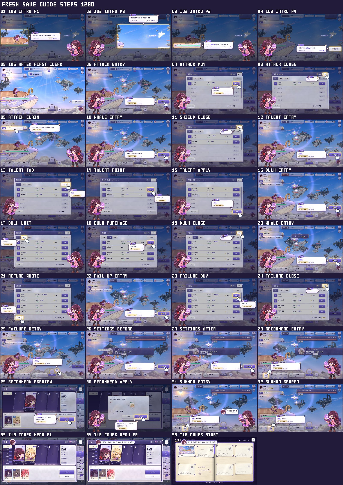
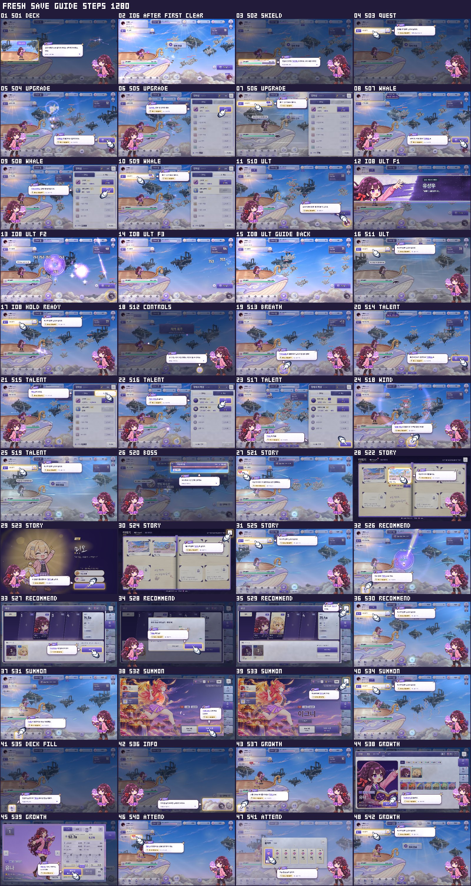
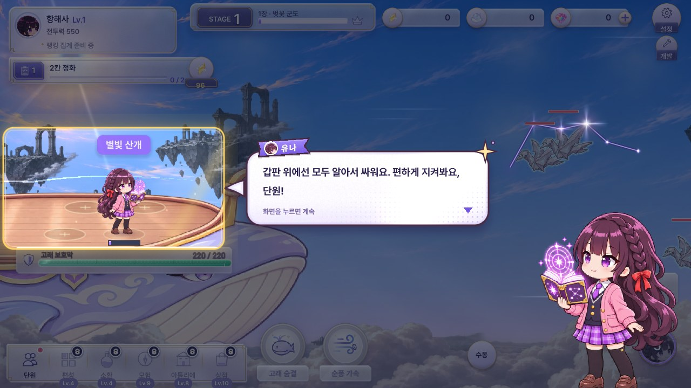
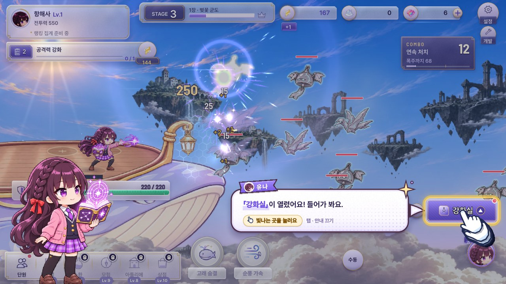
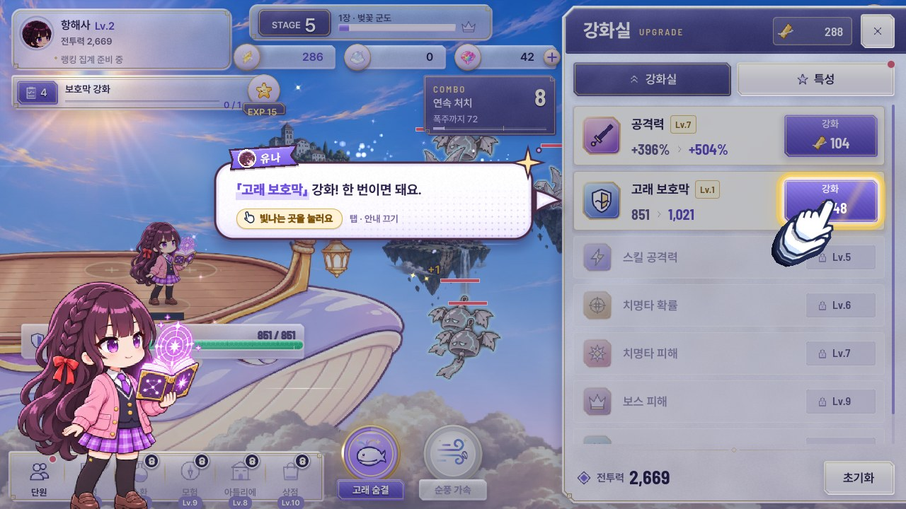
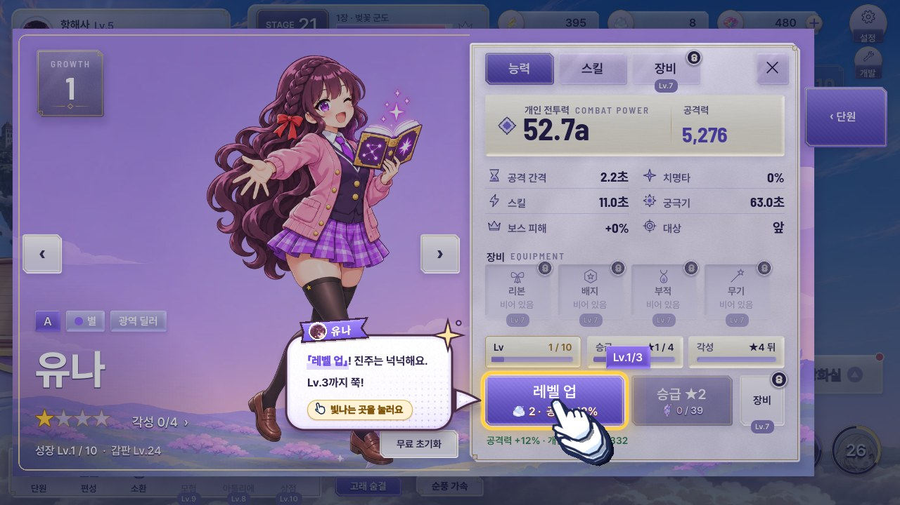

1·13가이드 전체 흐름 (단계 시트)
단계별 문구·수정 요청은 가이드 흐름 페이지에서




1첫 화면 — 한 줄만
적·보호막·강화실을 한꺼번에 알려 주지 않아요.


1강화실 — 먼저 열고 안내
잠긴 기능은 짚지 않아요.


2공격력 — 한 번이면 끝
한 번 누르면 단계 완료.

3보호막 강화 — 실제 버튼을 짚음
닫기 안내 없이 강화 버튼을 바로 짚어요.


10유나 레벨업 — Lv.3까지 한 단계
한 단계 안에서 Lv.3까지.


11·12출석판 오늘 칸
노란 강조가 실제 칸 모양·위치를 따라가요.

4·5강화실 — 오른쪽 패널
오른쪽에서 열림 · 전투 계속 · ×1/×10/MAX 제거 · 새 아이콘


5특성
강화실과 탭으로 통합 · 특성 아이콘


4강화실을 연 채 전투
전투 화면 어두운 막 없음


4한 번 탭 = 1단계
줄에 금빛 번짐

4꾹 누르기 연속 강화
점점 빨라짐 · 재화 부족 시 멈춤

5특성 선택

5·6고래 숨결·순풍 가속 / 보스 체력 겹침
원형 유리 버튼 · 보스 체력과 겹침 해소


7단원 버튼 마오 얼굴
얼굴 제거 · 빨간 점만


8전투력 상승 연출
숫자 굴림·금빛 · +칩 · POWER UP 빛 훑기


8전투력 상승 후


9스테이지 클리어
전장 가운데


12출석 — 출석판
열기만 하면 지급 없음 · 오늘 칸을 눌러 받기


12출석 — 받기

12출석 — 받은 뒤
도장 · 빨간 점 사라짐

4강화실 열림 — HUD 비킴
재화·보스·콤보가 패널 왼쪽으로